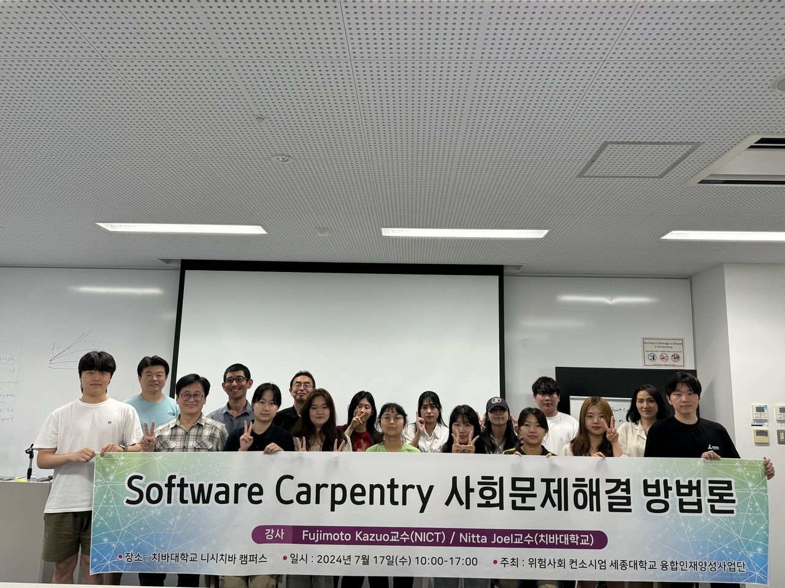
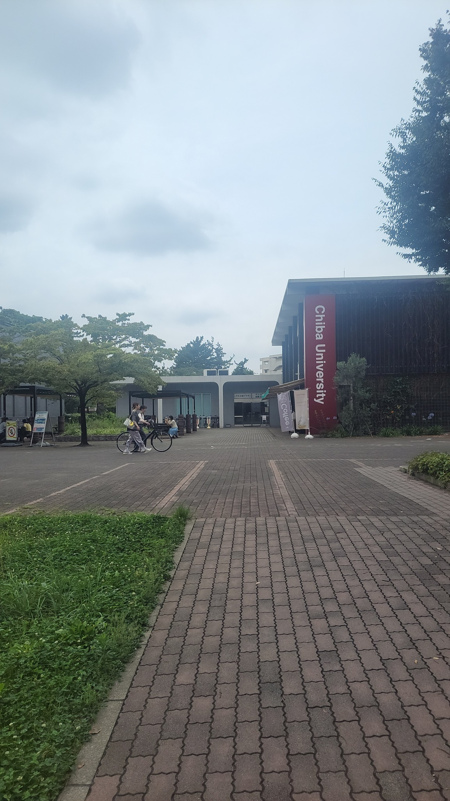
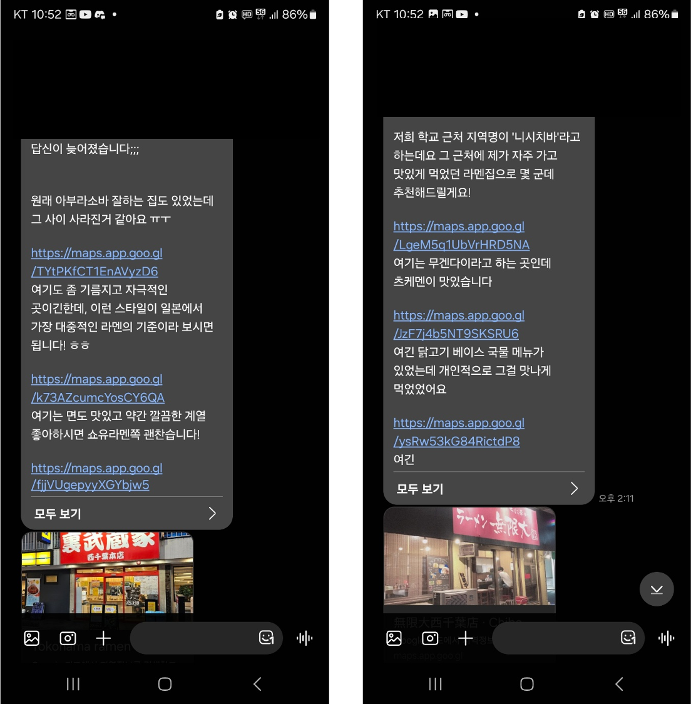

gantt
title 도쿄 여행 상세 일정
dateFormat YYYY-MM-DD HH:mm
axisFormat %m-%d %H:%M
section 7월 16일
인천에서 도쿄로 출발 :2024-07-16 09:00, 3h
나리타 공항 도착 및 입국 절차 :2024-07-16 12:00, 2h
호텔로 이동 및 체크인 :2024-07-16 14:00, 2h
도쿄 시내 관광 (시부야/신주쿠) :2024-07-16 16:00, 4h
section 7월 17일
지바대학교로 이동 :2024-07-17 09:00, 1h
지바대학교 워크샵 :2024-07-17 10:00, 7h
호텔 복귀 :2024-07-17 18:00, 1h
section 7월 18일
디즈니랜드로 이동 :2024-07-18 08:00, 1h
도쿄 디즈니랜드 방문 :2024-07-18 09:00, 10h
호텔 복귀 :2024-07-18 20:00, 1h
section 7월 19일
체크아웃 :2024-07-19 09:00, 1h
라면 탐방 1 :2024-07-19 10:00, 2h
라면 탐방 2 :2024-07-19 13:00, 2h
나리타 공항으로 이동 :2024-07-19 16:00, 2h
출국 수속 :2024-07-19 18:00, 2h
인천으로 출발 :2024-07-19 20:00, 3h
일본 도쿄 여행
일정
- 7월 16일 (1일차):
- 인천에서 도쿄 나리타 공항으로 출발
- 도쿄 시내 호텔 체크인
- 저녁: 도쿄 시내 관광 (예: 시부야 또는 신주쿠 구경)
- 7월 17일 (2일차):
- 지바대학교 워크샵 참석 (종일)
- 7월 18일 (3일차):
- 도쿄 디즈니랜드 방문 (종일)
- 7월 19일 (4일차, 마지막 날):
- 오전-오후: 도쿄 라면 탐방 - 유명한 라면집 방문 (예: 츠타, 나카모토, 후지야마 등)
- 라면 박물관 방문 (요코하마 신요코하마 라멘 박물관)
- 저녁: 나리타 공항으로 이동, 인천으로 귀국
지도
다음의 패키지를 부착합니다: 'dplyr'The following objects are masked from 'package:stats':
filter, lagThe following objects are masked from 'package:base':
intersect, setdiff, setequal, union지하철
JR 도쿄 와이드 패스는 실제로 디즈니랜드 왕복만을 위한 패스가 아닙니다. 이 패스의 특징을 정리해 드리겠습니다:
유효 기간: 연속 3일간 사용 가능
-
이용 가능 지역:
- JR 동일본의 도쿄 근교 지역 (치바, 가나가와, 사이타마 등 포함)
- 도쿄 모노레일
- 디즈니리조트 라인
-
포함 내용:
- JR 선 (신칸센 제외) 자유 승차
- 도쿄 모노레일 자유 승차
- 디즈니리조트 라인 자유 승차
-
가격 (2024년 기준):
- 어른 (12세 이상): 10,180엔
- 어린이 (6-11세): 5,090엔
-
장점:
- 디즈니랜드 왕복뿐만 아니라 도쿄 근교 여행에도 사용 가능
- 3일 동안 자유롭게 이용 가능하여 다양한 관광지 방문에 편리
-
단점:
- 디즈니랜드만 왕복하는 경우에는 일반 승차권보다 비쌀 수 있음
정리하자면: - JR 도쿄 와이드 패스는 디즈니랜드 왕복만을 위한 것이 아니라, 3일간 도쿄 근교를 자유롭게 여행할 수 있는 패스입니다. - 디즈니랜드 방문을 포함해 다른 관광지도 둘러볼 계획이라면 경제적일 수 있습니다. - 하지만 디즈니랜드만 왕복한다면 일반 승차권이 더 저렴할 수 있습니다.
구매방법
JR 도쿄 와이드 패스의 구매 방법에 대해 설명해 드리겠습니다:
-
한국에서 구매:- 여행사:
- 하나투어, 모두투어 등 주요 여행사에서 사전 구매 가능
- 온라인 또는 오프라인 매장에서 구입
- 온라인 예약:
- JR동일본 공식 웹사이트에서 예약 가능
- 예약 후 일본 도착 시 지정된 장소에서 수령
- 여행사:
- 일본 현지 구매:
- 공항:
- 나리타 공항, 하네다 공항의 JR 동일본 여행 서비스 센터
- 공항 도착 시 바로 구매 가능
- 주요 JR 역:
- 도쿄역, 신주쿠역, 시부야역 등 주요 역의 JR 매표소나 여행 서비스 센터
- JR 동일본 여행 서비스 센터:
- 도쿄, 신주쿠, 이케부쿠로 등 주요 지역에 위치
- 공항:
- 구매 시 필요 사항:
- 여권 (외국인 전용 패스이므로 여권 확인 필요)
- 결제 수단 (현금 또는 신용카드)
- 주의사항:
- 일본 입국 전 온라인으로 예약하면 할인을 받을 수 있는 경우가 있음
- 성수기에는 매진될 수 있으므로 가능하면 사전 예약 권장
- 패스의 유효 기간은 첫 사용일로부터 연속 3일
- 팁:
- 공항에서 구매하면 바로 사용할 수 있어 편리함
- 온라인 예약 시 할인을 받을 수 있는지 확인해보세요
- 구매 전 여행 일정을 고려하여 패스 사용 시작일을 잘 선택하세요
- 교환증(Exchange Order) 구매 시:
- 한국에서 교환증을 구매한 경우, 일본 도착 후 실제 패스로 교환해야 함
- 교환은 위에 언급된 JR 동일본 여행 서비스 센터에서 가능
지바대


지바대 라멘집

저희 학교 근처 지역명이 '니시치바'라고 하는데요 그 근처에 제가 자주 가고 맛있게 먹었던 라멘집으로 몇 군데 추천해드릴게요!
https://maps.app.goo.gl/LgeM5q1UbVrHRD5NA
여기는 무겐다이라고 하는 곳인데 츠케멘이 맛있습니다
https://maps.app.goo.gl/JzF7j4b5NT9SKSRU6
여긴 닭고기 베이스 국물 메뉴가 있었는데 개인적으로 그걸 맛나게 먹었었어요
원래 아부라소바 잘하는 집도 있었는데 그 사이 사라진거 같아요 ㅠㅜ
https://maps.app.goo.gl/TYtPKfCT1EnAVyzD6
여기도 좀 기름지고 자극적인 곳이긴한데, 이런 스타일이 일본에서 가장 대중적인 라멘의 기준이라 보시면 됩니다! ㅎㅎ
https://maps.app.goo.gl/k73AZcumcYosCY6QA
여기는 면도 맛있고 약간 깔끔한 계열 좋아하시면 쇼유라멘쪽 괜찬습니다!
https://maps.app.goo.gl/fjjVUgepyyXGYbjw5
여기는 학교 근처는 아니고 한 정거장 정도 근처에 있는 치바역이라는 쪽인데요 혹시 그쪽에 숙소 잡으시거나 하시면 가볼만합니다!
https://maps.app.goo.gl/ysRw53kG84RictdP8
여긴 약간 기름지고 자극적이고 양 많고 마늘 폭탄으로 들어가는 특이한 컨셉 가게인데 먹어볼만은 합니다 ㅎㅎ
마크다운 표로 정리해줘
| 번호 | 가게 이름 | 링크 | 추천 메뉴 | 특징 및 설명 |
|---|---|---|---|---|
| 1 | 무겐다이 | 무겐다이 링크 | 츠케멘 | 츠케멘이 맛있는 곳. 풍부한 국물 맛. |
| 2 | 닭고기 베이스 가게 | 가게 링크 | 닭고기 베이스 국물 라멘 | 닭고기 베이스의 국물이 인상적인 곳. 개인적으로 추천. |
| 3 | 기름진 라멘 가게 | 가게 링크 | 기름진 라멘 | 기름지고 자극적인 스타일. 일본 대중적인 라멘 스타일의 기준. |
| 4 | 쇼유라멘 가게 | 가게 링크 | 쇼유라멘 | 면이 맛있고 깔끔한 쇼유라멘이 특징. |
| 5 | 치바역 근처 가게 | 가게 링크 | - | 치바역 근처로, 숙소가 가까우면 방문할 만한 곳. |
| 6 | 특이한 컨셉의 가게 | 가게 링크 | - | 기름지고 자극적인 마늘 폭탄 컨셉의 라멘집. 양이 많음. |
| 라멘집 이름 | 링크 | 특징 | 위도 | 경도 |
|---|---|---|---|---|
| 無限大 西千葉店 | 무겐다이 | 츠케멘이 맛있음 | 35.6221435 | 140.1044743 |
| ニューとんとん | 뉴 톤톤 | 닭고기 베이스 국물 메뉴 추천 | 35.6217001 | 140.1037017 |
| ラーメンショップ 龍門 | 라멘샵 룡몬 | 양 많고 마늘 폭탄 라멘 | 35.6235308 | 140.1034602 |
| 頑々坊子 | 간간보시 | 일본에서 대중적인 스타일 | 35.6223729 | 140.102436 |
| 長州ラーメン 万龍軒 | 만룡켄 | 면도 맛있고 깔끔한 쇼유라멘 | 35.6238641 | 140.1019659 |
| 松戸富田麺業 | 마츠도 토미타 면업 | 치바역 근처 | 35.6142718 | 140.1100112 |
<folium.map.Marker object at 0x13f2e6660>
<folium.map.Marker object at 0x13f371070>
<folium.map.Marker object at 0x13f3711c0>
<folium.map.Marker object at 0x13f371310>
<folium.map.Marker object at 0x13f20f350>
<folium.map.Marker object at 0x13f337f80>
Make this Notebook Trusted to load map: File -> Trust Notebook